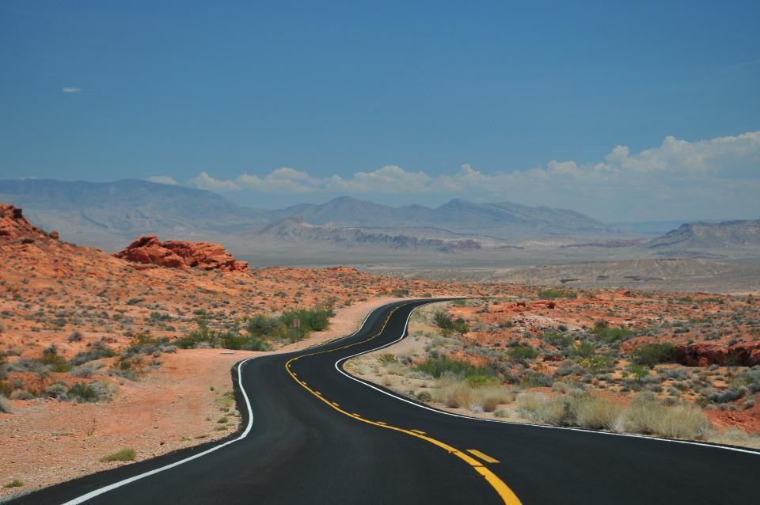

Tjänster
I dag är vi tio anställda, varav sex trafiklärare, och har fem anpassade bilar: två med handreglage för gas och broms, en med vänsterfotsgas, en med styrkula och knappsats och en rullstolsbil där man kör sittande i sin egen rullstol. Elever kommer från hela Mellansverige, och vissa bor på hotell i Örebro under intensivveckor.
Vilken anpassning behöver du?

Rätt anpassning från början
Innan första lektionen provkör du alla fem bilarna på övningsplanen vid Gustavsvik, tillsammans med din arbetsterapeut. Då vet ni vilken anpassning som fungerar innan Försäkringskassan och fordonsanpassaren kopplas in.
Provkörningen tar två timmar och kräver inget körkortstillstånd.

Körkort med rörelsehinder
Utbildningen följer samma mål som all B-utbildning, men tar ofta längre tid och kräver lärare som förstår kroppen. Alla våra lärare har gått kurs i fordonsanpassning och två har vårdbakgrund.
Körprovet görs i den bil du har övat i, med villkor för anpassningen på körkortet.

Intensivveckor för långväga elever
Den som bor långt bort kan ta körkortet på två till fyra intensivveckor. Vi bokar tillgängligt hotell vid Järntorget och lägger två lektioner om dagen med vila emellan.
Ungefär en tredjedel av eleverna kommer från andra län.

Tillbaka efter skada
För dig som hade körkort före en skada eller sjukdom och nu behöver köra med anpassning. Det räcker ofta med fem till tio lektioner för att vänja sig vid den nya bilen.
Vi samarbetar med Trafikverkets utredare vid prov med ändrade villkor.
Från provkörning till egen bil
- 1

Samtal och journal
Vi pratar om din funktion och, om du vill, med din arbetsterapeut eller läkare.
- 2

Provkörning i fem bilar
Två timmar på övningsplanen vid Gustavsvik för att hitta rätt anpassning.
- 3

Lektioner i din anpassning
En och samma lärare och bil genom hela utbildningen, med vila när kroppen behöver det.
- 4

Körprov och egen bil
Körprov med villkor för anpassningen, och hjälp med att beställa din egen bil.
Behöriga för anpassade fordon
- Trafikskola för personbilTransportstyrelsens tillstånd för behörighet B, med anpassade fordon sedan 2015.
- Kurs i fordonsanpassningAlla sex lärare har genomgått utbildning i anpassade fordon och förarmiljö.
- Arbetsterapeutisk kompetensEn legitimerad arbetsterapeut ingår i bedömningsteamet.
- Riskutbildning anpassadGodkända för risk 1 och 2, med halkbanan körd i anpassad bil.